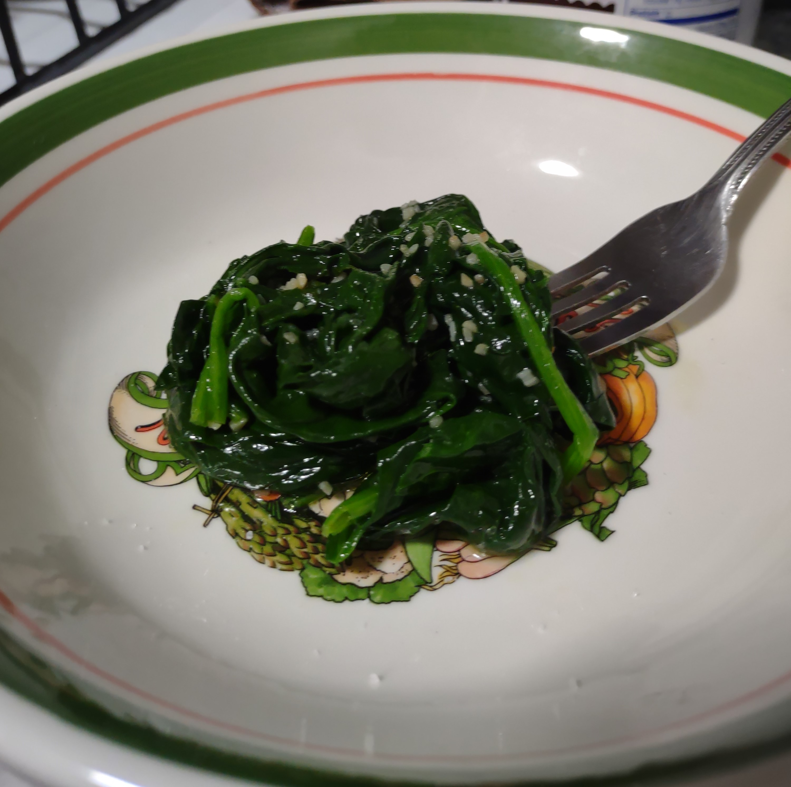

Garlic Lemon Spinach

- Bunch of Spinach
- Olive Oil or Vegetable Oil
- Minced Garlic
- Lemon Juice
- Salt
- Wash Spinach thoroughly and dry with paper towels or a salad spinner.
- Heat Oil and Garlic in a coverable pot or pan until Garlic begins browning.
- Add Spinach to pot and mix to coat in Oil and Garlic.
- Cover the pot/pan for a minute to let Spinach cook.
- Uncover and stir for another 30 seconds to a minute.
- Remove from heat and mix in a few drops of lemon juice.
- Salt to taste and serve